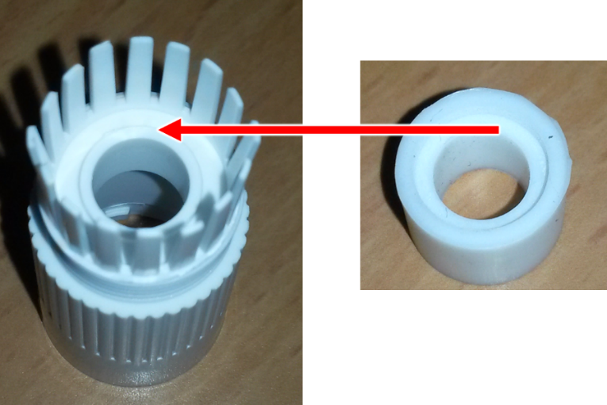
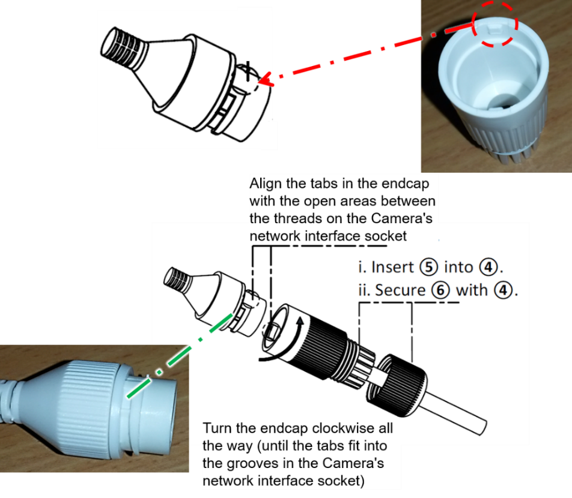

IZ600F Installation Guide
Bullet ALPR Camera


|
Inex products must be mounted as described in their Installation Guides. If not, moisture problems may occur - which are not covered by the warranty. |
Click to show the Table of Contents
- 1. Related Documents and Software
- 2. Applicability
- 3. Training and Support
- 4. Checklist
- 5. Prepare Components and Tools
- 6. Plan Your Site
- 7. Prepare Cables
- 8. Install Camera(s) and Other Components
- 9. Connect Components (Wiring)
- 10. Power Up and Set Up IP
- 11. Configure Camera Settings
- 11.1. Logging In to the Camera
- 11.2. Logging Out of the Camera
- 11.3. Using the Camera’s Configuration Screens
- 11.4. Setting the Access Level (System > Access Level)
- 11.5. Enabling the RTSP Service and Port (Network > RTP/RTSP)
- 11.6. Changing the Camera’s IP Address (Network > IP Address)
- 11.7. Setting the Date & Time (System > Date & Time)
- 11.8. Configuring Stream Setup (Video & Audio > Stream Setup)
- 11.9. Configuring Camera Setup (Video & Audio > Camera Setup)
- 11.10. Configuring Motion Detection (Video & Audio > Motion Detection)
- 11.11. Hardware Reset (Resets Parameters and Administrator Password)
- 12. Aim and Calibrate
- 13. Verify System Operation
- 14. Troubleshooting and Maintenance
- 15. Notices, Safety Precautions and Certifications
1. Related Documents and Software
Click to show the Related Documents table
| Doc. No. | Title |
|---|---|
IZ600F User Guide |
|
IZ600F Quick Start Guide |
|
IZ600F Technical Data Sheet |
|
IZ600F Camera Mount Installation documentation |
|
EU Illuminator Mounting documentation |
|
US Illuminator Mounting documentation |
|
IZ Discovery Utility software components |
|
IZ Discovery User Guide |
|
RoadView Documentation |
|
Software End User License Agreement (includes list of open source software) |
|
IZL Illuminator Series User Guide |
|
IZ-REM-RELAY-4 Quad-Relay Remote (WEB) Relay: Supporting Documentation |
|
IZODPUG AI Outdoor Data Processing Unit: Technical Data Sheet |
|
IZIDPUG Indoor AI Data Processing Unit: Installation and User Guide |
|
IZPWR DIN Rail Mount Power Supplies Technical Data Sheet |
|
NDAA Section 889 Certification of Compliance |
2. Applicability
This document was written based on IZ600F firmware version 4.53-301-rp_ZA. Later versions may require changes to this document.
3. Training and Support
3.1. Training
This document does not take the place of training by Inex Technologies' certified specialists. Contact Inex Technologies to schedule training.
3.2. Support
If you have any questions, please contact our support team via our Inex Technologies Website.
4. Checklist
-
Prepare components and tools
-
Plan your site
-
Prepare cables
-
Install camera(s) and other components
-
Connect components (wiring)
-
Power up and set up IP
-
Configure camera settings
-
Aim and calibrate
-
Verify system operation
5. Prepare Components and Tools
5.1. Package Contents
Carefully unpack the contents of the camera package.
The package includes:
-
IZ600F, Bullet ALPR Camera with 3-axis bracket
-
LAN cable connector (field mountable)
-
3 mm Allen/hex key for pan/tilt/roll adjustment
-
Screws and anchors to attach the camera to a wall or surface
|
If any parts are missing or damaged, please contact Inex Technologies. |
5.2. Required Accessories
|
Surge protection must be provided on all power, network and data cables All network cable extensions and repeaters must be shielded. |
-
Power supply:
-
12VDC, 1.2 Amp power supply, with male barrel connector (5.5 mm outer diameter, 2.1 mm inner diameter), or
-
PoE (IEEE 802.3af) switch capable of providing 12VDC at 1.2 Amp
-
-
Waterproof junction box for the camera’s power and LAN connections
-
Network cabling (typically CAT 5e/6 cable) and switch. The total length of the cable from the network switch to the camera should not exceed 328 feet (100 meters).
-
A list of accessories that can be supplied by Inex can be found at the end of the specifications table (see your camera’s User Guide and Section 7.1).
5.3. Optional Accessories
-
Pole mount adapter (PMA) - see the Mounting Hardware documentation (see Section 1)
-
External Illuminator - Can be used to enhance overview vehicle image quality, for front and/or rear capture. It is recommended to use an illuminator power supply separate from the camera’s supply.
-
Mount illuminators at an appropriate distance away from their associated camera(s), according to the objectives of your project. Contact Inex for guidance/training about this subject.
-
Position the illuminator so you can aim it at the place where vehicles pass for recognition - while minimizing the glare into drivers' eyes. In most cases, however, white illuminators are mounted to be aimed at the rear of vehicles. Illuminator aiming is most effective at night.
-
5.4. Laptop Computer
-
You will need to provide a laptop computer to use for configuration. If you will be using the laptop outdoors, the screen must be able to be seen in strong sunlight. Required software:
-
Windows 10 or above - with .NET 4.5 enabled in "Windows Features"
-
Chrome or Microsoft Edge browser
-
5.5. Tools
-
Network (LAN) cabling (typically CAT 5e/6 cable) with RJ45 connectors. The total length of the cable should not exceed 328 feet (100 meters). See Section 7 for important LAN cable information.
-
Tools for building LAN cables (wire stripper, crimp tool, etc.) and RJ45 connectors.
For installations that require network cabling: typically use CAT 5e/6 cable. The total length of the cable should not exceed 328 feet (100 meters).
All network cable extensions and repeaters must be shielded.
6. Plan Your Site
|
Installations that position the camera at significant angles in relation to the plates will reduce the line-of-sight distances specified. Reflectivity: |
6.1. Installation Overview/Plate Types
-
You will first need to determine the ambient lighting conditions (illumination) at your site.
-
The lighting conditions may require you to use an external illuminator (see Section 6.5). You may only be able to determine this during camera configuration.
-
Determine the plate types you will be recognizing: reflective, non-reflective or IR (infrared-type)-phobic. Note that both reflective and non-reflective plates can be IR-phobic, as shown in these examples:
-
Reflective IR-phobic plates use character ink that is transparent to IR light. The IR images of these characters are filled with a color very close to that of the plate’s background. This makes it more difficult for an ALPR algorithm to recognize the characters.
Figure 2. Reflective IR-phobic Plate Example -
Non-reflective IR-phobic plates typically have a combination of red and white characters/background, which reduces the contrast between the characters and the background. This makes it more difficult for an ALPR algorithm to recognize the characters:
 Figure 3. Non-Reflective IR-phobic Plate Examples
Figure 3. Non-Reflective IR-phobic Plate Examples
-
-
Install the camera as described in the following sections.
-
Depending upon whether or not the illumination is sufficient at night, and the plate types you need to recognize, you may need to perform the camera calibration and configuration first under dark conditions, and then light (day) conditions.
6.2. Horizontal Field of View (Capture Line)
Your camera’s Field of View (FOV) is the area that the camera can "see". You can think of this area as an imaginary rectangle rising from the lane upwards. The width of this area is called the horizontal FOV or "capture line".
See your camera’s User Guide for the horizontal and vertical FOV specifications.

Select your camera’s position so that license plates are always within the capture line and parallel to it, with the camera facing as straight at the plates as possible - as shown in the following diagrams:


6.3. Angles and Distances
|
See your camera’s data sheet for capture distance specifications. Installations that position the camera at significant angles in relation to the plates will reduce the line-of-sight distances specified. |
Click to show notes for Horizontal Angle
|
See your camera’s data sheet for capture distance specifications. If you must capture plates on a curve, place the camera on the side of the road that minimizes the horizontal angle. At larger angles, the reflectivity of the plates is reduced, resulting in images with less contrast. |

Click to show notes for Vertical Angle
|
See your camera’s data sheet for capture distance specifications. The distance from the camera to the capture line must be within the viewing range of the LPR camera. Adjust the vertical angle so that the camera can read plates at all of their expected heights from the road. Larger angles and/or greater mounting heights may be required in order to recognize plates on vehicles close to each other (such as in slow/congested traffic). At larger angles, the reflectivity of the plates is reduced, resulting in images with less contrast. |
6.4. Position of the Sun in Relation to the Camera
The camera should not be positioned so that the rays of the sun behind the camera shine along the camera-to-plate axis. Reflective plates will cause severe glare to be reflected back to the camera, obscuring the image of the plate’s characters.
Avoid/mitigate by:
-
Not installing the camera in an east/west direction
-
Installing the camera near a building that shields it from the sun’s rays
-
Installing the camera on a short pole
-
Using a double-camera installation (2 different angles or front/rear)

6.5. Optimizing Nighttime Vehicle Overview Images (using External Illuminators)
External illuminators can be used to enhance overview vehicle image quality, for front and/or rear capture. It is recommended to use an illuminator power supply separate from the camera’s supply.

6.5.1. Matching Your Camera to an Inex Illuminator
|
The wavelength of an external illuminator must be compatible with the wavelength of the internal illuminators of the Inex camera. |
The Inex IZ600F cameras are typically used with the IZL series illuminators.
By using the following guidelines, you can match the illuminator to your Inex camera.
-
The number of illuminator LEDs and beam angle must match the distance type (long or short) of the camera being used, as follows:
-
Fewer LEDs and wider beam angles are used for short distances
-
More LEDs and narrower beam angles are used for longer distances
-
The results of applying these guidelines can be found in the following table:
| Camera | Illuminator | Strobe Signal | Night Image | Installation |
|---|---|---|---|---|
IZ600F |
IZL1/2-IR-XXX |
N/A |
B/W |
Front |
IZ600F |
IZL1/2-WL-XX |
N/A |
Color |
Rear |
6.5.2. Illuminator Mounting and Aiming
See the illuminator guides for further details about installation and mounting considerations (see Section 1).
-
Mount illuminators at an appropriate distance away from their associated camera(s) , according to the objectives of your project. Contact Inex for guidance/training about this subject.
-
Position the illuminator so you can aim it at the place where vehicles pass for recognition - while minimizing the glare into drivers' eyes. In most cases, however, white illuminators are mounted to be aimed at the rear of vehicles. Illuminator aiming is most effective at night.
6.6. Additional Installation Considerations
| Item | Considerations |
|---|---|
Surge Protection |
|
Correct, Stable and Sufficient Power |
|
Cable Extensions IMPORTANT All network cable extensions and repeaters must be shielded. |
|
Cable Connection Waterproofing* CAUTION Inex products must be mounted as described in their Installation Guides. If not, moisture problems may occur - which are not covered by the warranty. |
|
Front/Rear Capture - or Both |
|
Trigger Hardware (such as inductive loops) |
|
Objects with character-like appearances (interpreted as characters on a plate, resulting in false reads); avoid having these items in the Field of View |
|
Obstructions (blocking FOV) |
|
Bottom opening (screw cover) accessible |
|
* Use a drip loop for the cable entering the camera
7. Prepare Cables
All network cable extensions and repeaters must be shielded.
When adding extensions to cables,
be sure that there are stable/correct signal
and power levels delivered to all components.
7.1. Typical Wiring Diagram
The dotted line box represents a waterproof junction box used to enclose connections from the camera to the LAN (and external power supply, if used). The power supply type and configuration may be different than the one at your site. (See the Quick Start guide for other wiring options.)

| Item | Description | Ordering Information |
|---|---|---|
A |
LAN Cables |
Supplied by integrator |
B |
Waterproof Connection Box |
Not included |
D |
Power Supply for IZIDPUG (Rev. B) |
Included with IZIDPUG |
E |
Power Supply for Illuminator: 24 VDC, 100/120W or 240W; DIN rail |
For IZL1, Inex P/N: IZPWR120-24-MWL-DIN |
F |
Power/Signals Cable for Illuminator |
Included with illuminator |
G |
Inex P/N: See Table 2 for a table of Camera-to-Illuminator Recommended Setups. |
7.2. Connectors and Wiring Assignments (Pinout)
|
|

7.3. Power Connections
-
If you are using a 12 VDC power supply, you must provide a male barrel connector (5.5 mm outer diameter, 2.1 mm inner diameter) to connect the (+) and (-) of the power supply to the camera’s female power connector.
-
If you are using PoE, be sure that your PoE connection is compatible with IEEE 802.3af, and can provide 12 VDC at 1.2 Amp.
7.4. Waterproof Cap for Network
The parts are in a separate plastic bag in the box.
| No. | Component |
|---|---|
1 |
Camera’s Network Interface Socket |
2 |
O-Type Gasket (separate, in package) |
3 |
Network Plug |
4 |
Waterproof Endcap |
5 |
Waterproof Rubber Gasket |
6 |
Lock Nut |
7 |
Network Cable from Router/Switch |
-
Unscrew the lock nut (6) from the waterproof endcap (4).
-
Feed the network cable (without a plug at the end) (7) through the:
-
Lock nut (6)
-
Waterproof rubber gasket (5). The rubber gasket may already be mounted inside the endcap. If the rubber gasket is not mounted and has an inset ridge, the ridge must face the waterproof endcap (4) so it can fit on the ridge inside the endcap.
-
Waterproof endcap (4)
-
-
Crimp a male RJ-45 network plug (3) onto the end of the cable, taking care to insert the twisted pairs of wires in the correct order.
8. Install Camera(s) and Other Components
|
Before mounting components, see Section 7 to ensure that your site plan accommodates how the components will be wired together. |
-
Prepare all wiring/cables between the system components, and from the system components to the camera’s mounting location (see Section 6 and Section 7).
-
If needed, prepare all the conduits that cables will pass through.
-
Mount other wiring-related components (such as junction boxes) in appropriate locations.
-
Secure the camera(s) and illuminator(s) to the appropriate mounting hardware (see the Mounting Hardware documentation - see Section 1).
-
The IZ600F can be mounted on a wall or square pole using its built-in mounting bracket.
-
You can also use an optional pole mount adapter (PMA) for pole mounting.
If you will be using external illuminator(s), mount them at an appropriate distance away from their associated camera(s), according to the objectives of your project. Contact Inex for guidance/training about this subject.
-
9. Connect Components (Wiring)
|
Turn off/disconnect the external (AC) power supply before connecting cables. If you are using an Inex power supply, see its User Guide (see Section 1) for important information. |
9.1. Waterproofing the Cable Connection Points (Junction Box)
|
All connections from the camera to the power supply and LAN, and the power supply, must be enclosed in a waterproof junction box. |
9.2. Connecting the Cables
-
Bring the base of the camera near the mounting location.
-
Seat the O-type gasket (2) onto the end of the camera’s network interface socket (1) (see Figure 12). Ensure that the gasket lies flat on the socket, without gaps or twists (see Figure 13).
 Figure 13. Seating the O-type Gasket
Figure 13. Seating the O-type Gasket -
Insert the network plug (3) into the camera’s network interface socket (1).
 Figure 14. Inserting the Network Plug
Figure 14. Inserting the Network Plug -
If needed, insert the rubber gasket (5) into the endcap (4). If there is a ridge, fit the rubber gasket inset ridge on the ridge inside the endcap (see Figure 15).
Figure 15. Rubber Gasket Inset Ridge: Fitting on Ridge Inside Endcap -
Align the tabs in the endcap with the open areas between the threads on the camera’s network interface socket (see Figure 16).
-
Turn the endcap clockwise all the way (until the tabs fit into the grooves in the camera’s network interface socket). See Figure 16.
Figure 16. Securing the Waterproof Jacket -
Connect the power and other wires. For a typical wiring diagram, see Section 7.1. For details about connections to external illuminators, see the relevant Illuminator guide (see Section 1).
10. Power Up and Set Up IP
10.1. Connecting the Power
|
If any power cables were lengthened, ensure that all cameras receive exactly their rated voltage (see your camera’s User Guide). Power undervoltage, overvoltage and/or incorrect polarity will damage the unit and will void the warranty. Stable power at the correct level must be supplied to each camera, even when under a heavy processing load. |
Connect a plug to the Live (+V), Neutral (-V) and Ground (Shield) terminals of the power supply (see Section 7.1).
Plug the power supply into the AC electricity. If required, switch the power supply unit ON.
10.2. Reserving IP Addresses in your Network
The Inex cameras have been pre-configured with default IP addresses. You will probably need to change these addresses to conform to the requirements of your network. Be sure that you have IP addresses reserved for all components of your ALPR system (RoadView computer and cameras).
10.3. Set Up IP
The IZ Discovery utility discovers all active devices connected to the network, and displays a list of their network parameters. These devices can include cameras and computers.
See the IZ Discovery User Guide (see Section 1) for instructions on how to change a camera’s IP address. You can also use the camera’s configuration screens to change the IP address (see Section 11.6).
11. Configure Camera Settings
11.1. Logging In to the Camera
-
To view the camera’s home page (see Figure 17):
-
Open a browser. Enter the IP address of the camera into the address field.
 Figure 17. Camera’s Home Page
Figure 17. Camera’s Home Page
-
-
Select the function you need from the links at the upper left:
-
Click the Live button to see what the camera is currently viewing. You can also use the zoom and focus controls.
Click to show notes for Live View
When using Live View for the first time, you may be prompted to download and install an ActiveX control (Smart Viewer).
If you do not have an internet connection to the network on which the camera is installed, wait 30 seconds, and you will be instructed on how to install the ActiveX control locally via the camera’s firmware.The stream of the Live View can also be accessed using an RTSP URL with this format :
rtsp://[username:password]@<Camera IP address>/cam0_0
where cam0_0 is a camera-specific parameter (which in this case enables you to access the primary stream)To see the stream, use a video player such as the VLC player, located at:
VLC -
If you need to change the camera’s IP address or other configuration parameters, click the Admin button. When prompted for a login, use the Administrator username/password credentials of root, IZpass12.
-
|
The Administrator user name (root) cannot be changed, and the Administrator password is encrypted. Therefore, if someone changes the Administrator password, there is no way to find out the password if it gets lost. If the password gets lost, you will have to reset the device with the FD (Factory Default) button (see Section 11.11). All setting values will be reverted to their factory defaults. |
11.3. Using the Camera’s Configuration Screens

|
Most configuration parameters may already have been pre-set for you. You only need to change the parameters described in the following sections. |
You can drill down to the configuration parameters as follows (see Figure 18):
-
Category (bold); left sidebar; click to display this item’s nodes (a set of parameter groups).
-
>>Parameter Group; click to display a set of parameter controls in the right-hand pane.
-
|
After changing parameters, remember to click the "Apply" button at the end of each set of parameters (some parameter groups have more than one set). |
11.4. Setting the Access Level (System > Access Level)
Your first action should be to set the Access Level to Full, with "Encrypted & Unencrypted" Authentication
An Access Leve of "Full" will enable you to receive the video stream without any special user identification, so that:
-
Anyone can use the Live View
-
The RTSP URL can be used without a username and password to see the Live View
|
If you change the Access Permission, click the Apply button under the Access Permission section. If you change the Authentication, click the Apply button in that section (you will be prompted to close the browser, and you will have to log in again). |
11.6. Changing the Camera’s IP Address (Network > IP Address)
|
It is highly recommended to use a fixed IP address (not DHCP). A fixed IP address enables you to access the camera using the same URL every time, even after unexpected power outages. You can also use IZ Discovery to change the camera’s IP address (see Section 1). |
-
In the Network group, click on IP Address:
 Figure 21. Changing the Camera’s IP Address
Figure 21. Changing the Camera’s IP Address -
To change the IP address to a fixed one:
The IP address must be unique within the entire ALPR system, and must be within the limits of standard IPv4 address numbering.
-
Click the Static radio button.
-
Enter the network address parameters. All cameras must be on the same subnet as both the computer you will use to communicate with and configure the camera, and the Inex RoadView computer.
It is highly recommended to record the camera’s IP address and port number in a safe place. You will need them if the camera’s parameters are reset back to their defaults, and for configuring Inex recognition software.
-
-
Click Apply.
After selecting Apply, you will be requested to close your web browser so the updates can take effect. This will take 20 seconds or more, to allow the camera time to reboot.
- If you click the browser’s Back button, all values will be discarded.
- If you click the browser’s Refresh button, the application will load the previous values. -
In the IZ Discovery utility (see the IZ Discovery User Guide - see Section 1), click the "Clear List" button, and verify that the camera can be recognized with the new IP address.
11.7. Setting the Date & Time (System > Date & Time)
|
The Time Zone selections are organized by continent. For example, the "America/" prefix covers various cities and countries in North America (U.S. and Canada) and South America. The "Period" is the interval (in seconds) at which the time server will be polled for updates. |
11.8. Configuring Stream Setup (Video & Audio > Stream Setup)
Three video streams are available for use, each with its own RTSP URL. The URLs are: rtsp://<Camera IP address>/cam0_n, where n is 0,1 or 2 for the primary, secondary or tertiary streams, respectively. Inex uses the "primary" stream, which can supply video for up to 3 clients.
Note the following details about some of the parameters:
-
Max Frame Rate
-
For U.S. (60 Hz electricity) - 30 fps
-
For Europe (50 Hz electricity) - 25 fps
-
-
Primary/Seconday/Tertiary - be sure to click "Primary" (turns red)
-
If any additional parameters appear below the main two sets of parameters, leave them at their defaults (depends on camera model)
11.9. Configuring Camera Setup (Video & Audio > Camera Setup)
Note the following details about some of the parameters:
-
Mode - click on "Default(Day)"; turns red
-
Shutter Control is set to Manual - means that the shutter speed will be chosen automatically between the Shutter Time Min and Max
11.10. Configuring Motion Detection (Video & Audio > Motion Detection)
Disable motion detection:

11.11. Hardware Reset (Resets Parameters and Administrator Password)
In some cases (such as if the Administrator password is lost), you will need to perform a hardware reset using the FD (Factory Default) button. All setting values will be reverted to their factory defaults. The IP address will be reset to 10.20.30.40.
To perform a hardware reset:
-
Unscrew the round cover on the bottom of the camera:
Figure 26. Unscrewing the Round Cover -
Locate the Factory Default (reset) button (see Figure 27).
-
Using a thin item such as a small screwdriver, hold the button down for several seconds until the communication LEDs shut off. The 2 communication LEDs (red/flashing and green/static) are mounted next to each another on the same side of the circuit board you see.
-
After the communication LEDs shut off, wait until they light up again. You can then use the camera and configure its parameters.
12. Aim and Calibrate
12.1. Preparing a Vehicle/License Plate
Move a vehicle next to, and at the middle of the capture line. (This is the position at which the vehicle sensor signals that the vehicle is present.) Ensure that the Camera System is aimed at the middle of the lane, and is at the required capture distance (see Section 6 and the IZ600F User Guide - see Section 1).
Alternatively, in a lab, position a license plate at the expected distance and height.
12.2. Determining the IP Address of the RoadView Computer with IZ Discovery
See the IZ Discovery User Guide (see Section 1).
12.3. Using RoadView
12.3.1. Logging In
-
Open a browser (Chrome or Microsoft Edge). Type in the IP address of the RoadView computer. For example:
192.168.5.110 -
You will see the login screen. Enter the default username and password (root, root):
 Figure 28. Logging In to RoadView
Figure 28. Logging In to RoadView -
You should see the RoadView Live (Journal) tab. See the RoadView ALPR User Guide for instructions for configuring and using RoadView (see Section 1).
12.3.2. Logging Out
See the RoadView ALPR User Guide (see Section 1) for logout instructions, using the multi-line dropdown menu icon in the upper right corner of the screen.
12.4. Calibrating the Camera Using RoadView
|
See Section 12.2 and Section 12.3 for instructions on how to log in to the computer running RoadView in your system. See the RoadView ALPR User Guide (see Section 1) for calibration instructions. Read the following instructions before adjusting the camera’s position as part of the calibration procedure; they are specifically for the IZ600F camera. DO NOT OVERTIGHTEN the two Roll screws (3). Excess force can cause the screws to break! There are two Roll screws - one on each side. |
To aim the camera, adjust the Pan (screw 2), Tilt (screw 1) and Roll (screw 3) as described in these instructions, and in the RoadView ALPR User Guide (see Section 1). Use the 3 mm Allen/hex key provided to loosen and tighten the adjustment screws.

|
The inner mechanisms of adjustments 2 (pan) and 1 (tilt) (see Figure 29) have small teeth. When the teeth mesh with protrusions in the housing, the adjustment position becomes fixed in place. Each tooth corresponds to a certain number of degrees of angle (6 per tooth). However, the distance between each tooth is not always small enough for finer adjustments (that are often required to aim the camera). If the camera is used with a pole mount adapter, you can achieve these finer adjustments by moving the adapter slightly - around the pole. |
13. Verify System Operation
-
Using a license plate mounted in a lab, or by driving a vehicle through the lane, verify that an Event is generated with the correct plate read (recorded in the RoadView Live (Journal) tab). See the RoadView ALPR User Guide (see Section 1).
-
Once the lane is active, verify that Events are being generated for each vehicle passing each camera, and that the recognition has sufficient accuracy and confidence.
14. Troubleshooting and Maintenance
14.1. Troubleshooting
See the RoadView ALPR User Guide (see Section 1).
15. Notices, Safety Precautions and Certifications
15.1. Notice
Inex Technologies reserves the right to improve and enhance its product offerings. Thus, the illustrations and descriptions presented in this manual may differ in some respect from the products you receive.
Technical specifications are subject to change without notice.
In addition, please note that some figures are not drawn to scale, in order to illustrate the addressed issue more effectively.
All third-party trademarks are the property of their respective owners.
Inex Technologies cannot be held liable for technical and editorial omissions or errors made in this document; nor for incidental or consequential damages resulting from the furnishing, performance or use of this document.
Actions or circumstances that void the warranty are improper usage, improper handling without adequate electrostatic discharge (ESD) protection, defects resulting from natural disaster (fire, flood etc.) and unauthorized modifications or repair.
Power undervoltage, overvoltage and/or incorrect polarity will damage the unit and will void the warranty.
It is your responsibility to ensure that all wires connected to Inex Technologies' products have appropriate surge protection. Any damage due to electrical spikes (for example, lightning) is not covered by the warranty.
No part of this document may be reproduced in any form without permission from Inex Technologies.
15.2. Legal Disclaimer
TO THE MAXIMUM EXTENT PERMITTED BY APPLICABLE LAW, THE PRODUCT DESCRIBED, WITH ITS HARDWARE, SOFTWARE AND FIRMWARE, IS PROVIDED "AS IS", WITH ALL FAULTS AND ERRORS, AND OUR COMPANY MAKES NO WARRANTIES, EXPRESS OR IMPLIED, INCLUDING WITHOUT LIMITATION, MERCHANTABILITY, SATISFACTORY QUALITY, FITNESS FOR A PARTICULAR PURPOSE, AND NON-INFRINGEMENT OF THIRD PARTY. IN NO EVENT WILL OUR COMPANY, ITS DIRECTORS, OFFICERS, EMPLOYEES, OR AGENTS BE LIABLE TO YOU FOR ANY SPECIAL, CONSEQUENTIAL, INCIDENTAL, OR INDIRECT DAMAGES, INCLUDING, AMONG OTHERS, DAMAGES FOR LOSS OF BUSINESS PROFITS, BUSINESS INTERRUPTION, OR LOSS OF DATA OR DOCUMENTATION, IN CONNECTION WITH THE USE OF THIS PRODUCT, EVEN IF OUR COMPANY HAS BEEN ADVISED OF THE POSSIBILITY OF SUCH DAMAGES.
THE USE OF ANY Inex Technologies' SOFTWARE PRODUCTS OR ANY OTHER SOFTWARE PRODUCTS REFERRED TO IN THIS DOCUMENT WITH INTERNET ACCESS SHALL BE USED WHOLLY AT YOUR OWN RISK. Inex Technologies DOES NOT TAKE ANY RESPONSIBILITY FOR ABNORMAL OPERATION, PRIVACY LEAKAGE OR ANY OTHER DAMAGES RESULTING FROM CYBER ATTACK, HACKER ATTACK, VIRUS INFECTION OR ANY OTHER INTERNET SECURITY RISKS.
For details, see the Inex Software End User License Agreement.
15.3. Regulatory Notices
-
FCC Conformance:
This device complies with Part 15 of the FCC Rules. Operation is subject to the following two conditions: (1) This device may not cause harmful interference, and (2) this device must accept any interference received, including interference that may cause undesired operation. -

 EU Conformity Statement:
EU Conformity Statement:
This product and - if applicable, the supplied accessories - are marked with "CE" and comply therefore with the applicable harmonized European standards listed under the EMC Directive 2014/30/EU, and the RoHS Directive 2002/95/EC. -
IP67 Ingress Protection:
This product conforms to the IP67 standard. -
 ONVIF:
ONVIF:
This device is ONVIF compliant (Profile S). -
 IK10:
IK10:
This device has been tested and conforms to the IK10 impact standard (vandal-proof).
© Inex Technologies, LLC - All rights reserved.
Doc. No. IZ600F-MAN-002b Ver. 2024-07-04